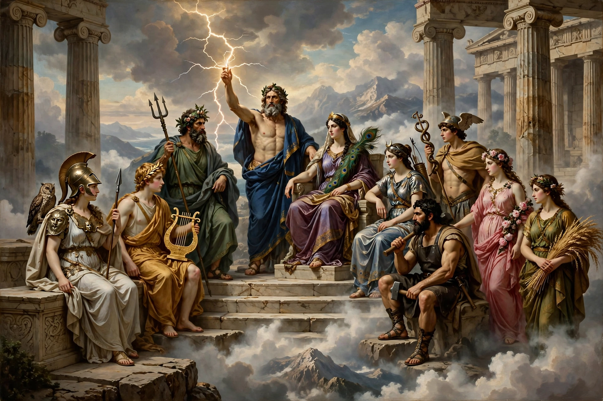

From Wikipedia, the free encyclopedia

| Polytheism | |
|---|---|
| Type | Form of theism |
| Belief | Multiple distinct deities |
| Examples | Ancient Greek religion, Norse religion, Hinduism, Shinto, Egyptian religion |
| Contrast | Monotheism, henotheism, pantheism |
Polytheism is the belief in and worship of multiple deities, which are usually assembled into a pantheon of gods and goddesses, together with their own religious sects and rituals. Polytheism is a type of theism and contrasts with monotheism, the belief in a singular God who is, in most cases, transcendent.
Polytheistic religions were the norm for most of human history. The earliest recorded religions — those of ancient Egypt, Mesopotamia, and the Indus Valley — were polytheistic, and the Greek, Roman, Norse, Celtic, Slavic, Chinese, Japanese, and pre-Columbian American religions all centred on pantheons of gods. In the modern world, major living polytheistic traditions include Hinduism (in many of its forms), Mahayana Buddhism's devotional aspects, Shinto, Taoism, and various African diasporic and Indigenous religions, as well as modern Pagan movements such as Wicca and Heathenry.
In polytheistic systems, deities typically have distinct personalities, domains, and relationships: gods of the sea, war, love, the harvest, death, and so on. Mythology narrates their genealogies, conflicts, and interactions with humans. Worship usually focuses on particular gods relevant to a place, profession, or need, and is often mediated by priesthoods, temples, festivals, sacrifice, and divination. Scholars sometimes distinguish "hard" polytheism — gods as separate, individual beings — from "soft" polytheism, in which the many gods are understood as aspects or faces of a single underlying divinity, a view found in some strands of Hindu philosophy.
Polytheistic religions tend to be tolerant of theological diversity, since the existence of one's own gods does not logically exclude others; conquerors and traders historically absorbed foreign deities into their pantheons rather than suppressing them. The related concept of henotheism, a term coined by Max Müller, describes devotion to one god as supreme without denying the existence of others.
Sumerian, Akkadian, and Babylonian religion worshipped gods such as Anu, Enlil, Ishtar, and Marduk. Ancient Egyptian religion spanned three millennia and centred on deities including Ra, Osiris, Isis, and Horus, closely tied to kingship and the afterlife. The pharaoh Akhenaten's brief promotion of the sun-disk Aten (c. 14th century BCE) is sometimes cited as an early experiment in monotheism or monolatry.
The twelve Olympians — Zeus, Hera, Poseidon, Demeter, Athena, Apollo, Artemis, Ares, Aphrodite, Hephaestus, Hermes, and Dionysus (or Hestia) — headed the Greek pantheon, adopted and adapted by Rome with Latin names (Jupiter, Juno, Neptune, and so on). Civic cult, mystery religions such as the Eleusinian Mysteries, and household worship coexisted within a religion with no scripture or dogma.
The Norse and Germanic peoples worshipped the Æsir and Vanir, including Odin, Thor, and Freyja; the Celts, gods such as Lugus and Danu; the Slavs, Perun and Veles. In Asia, Chinese folk religion venerates a celestial bureaucracy headed by the Jade Emperor alongside countless local gods, while Japanese Shinto honours innumerable kami. In the Americas, Aztec religion centred on gods such as Huitzilopochtli and Quetzalcoatl, and Maya and Inca religions had their own pantheons.
From late antiquity, the spread of Christianity and later Islam displaced most polytheistic religions of Europe, the Near East, and North Africa, often through a mixture of persuasion, royal conversion, and coercion. Polytheism nevertheless survived vigorously in South and East Asia and in many Indigenous societies, and colonial encounters spread African polytheistic traditions to the Americas, where they developed into religions such as Vodou, Santería, and Candomblé.
Since the mid-20th century, movements collectively called modern Paganism or Neopaganism have sought to revive or reconstruct pre-Christian polytheisms. These include Wicca, founded in England by Gerald Gardner; Heathenry, reviving Norse and Germanic religion; Hellenism; Kemetism (Egyptian); and various Celtic and Slavic reconstructionist movements. Practitioners typically emphasise nature, seasonal festivals such as the Wheel of the Year, and ritual practice over belief.